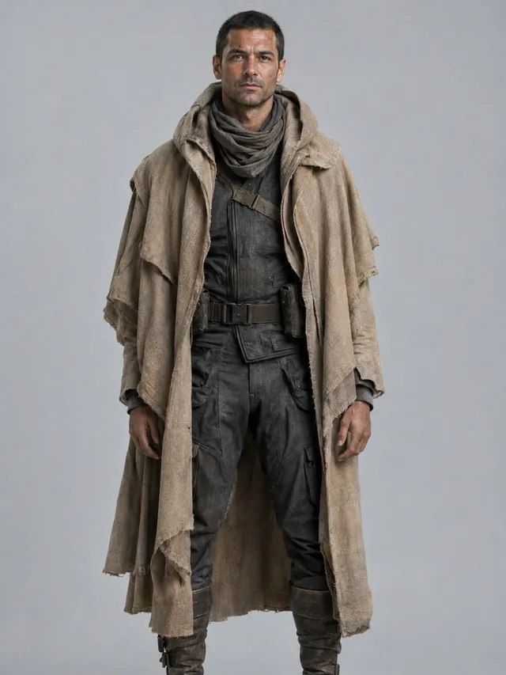
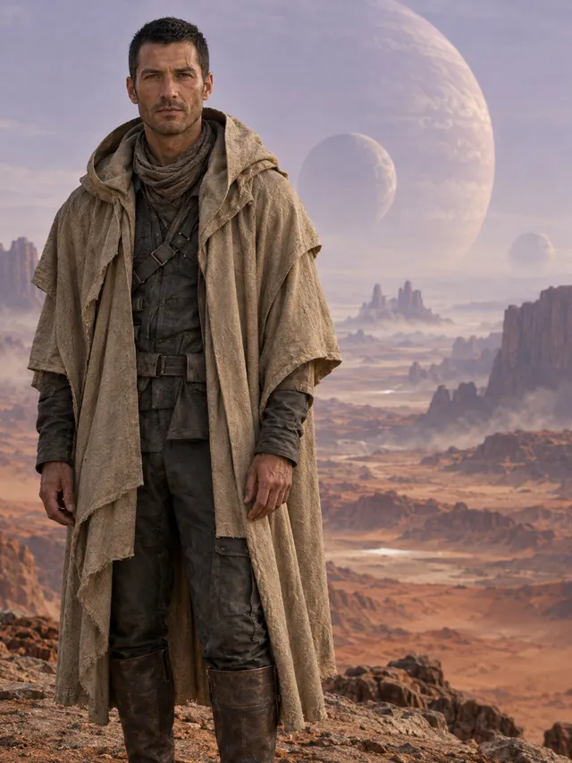
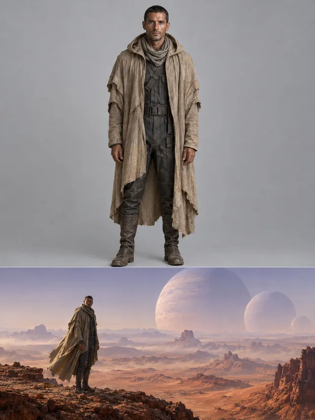
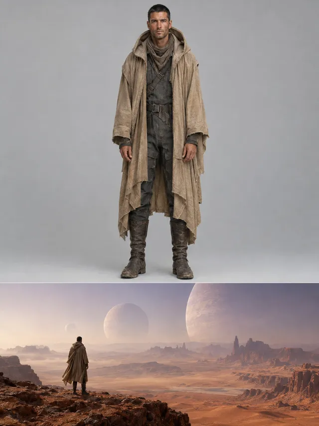
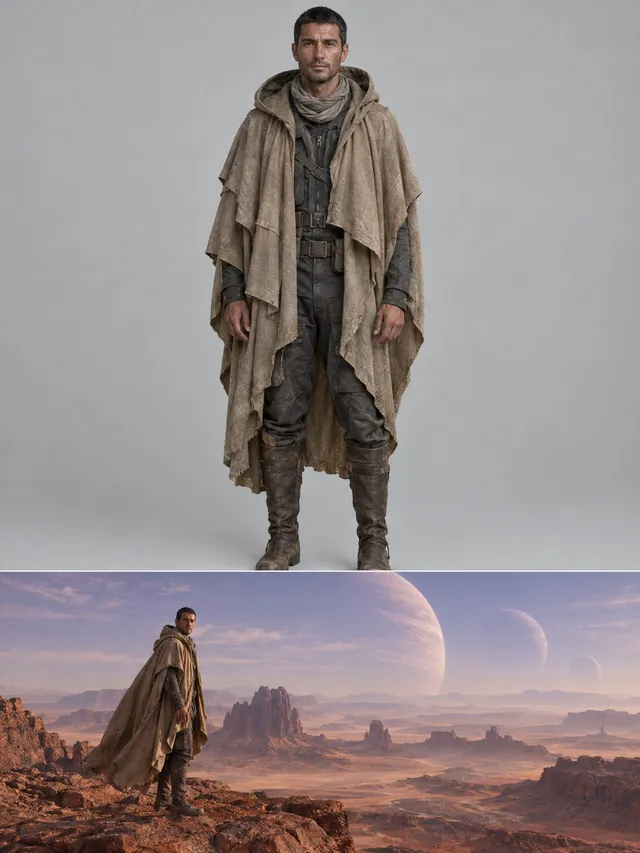
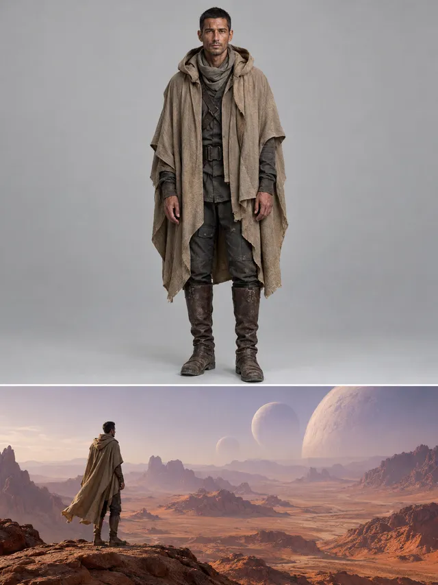
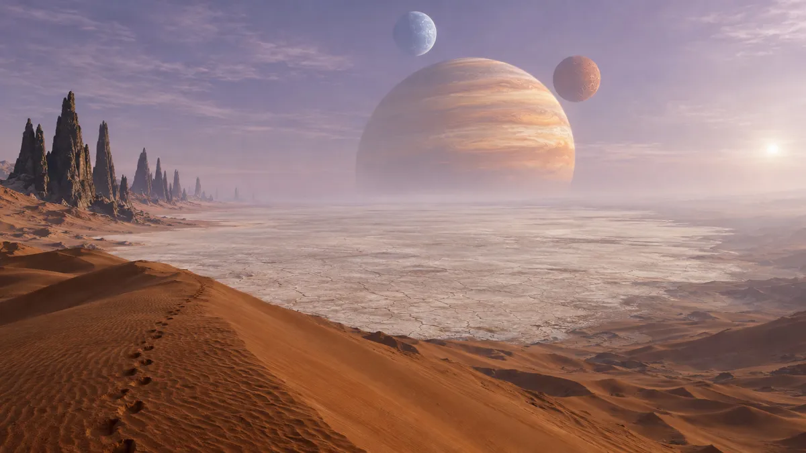
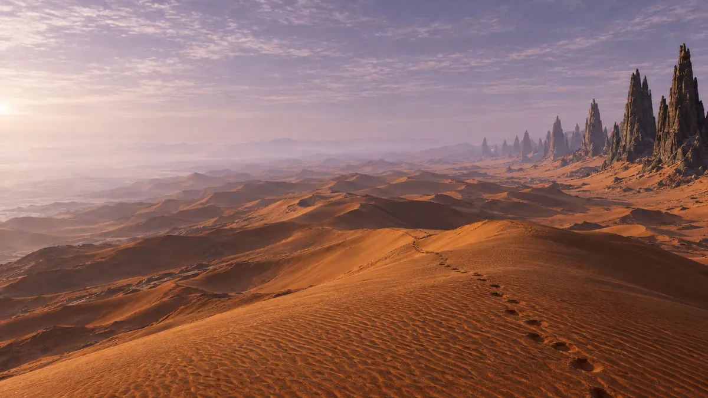
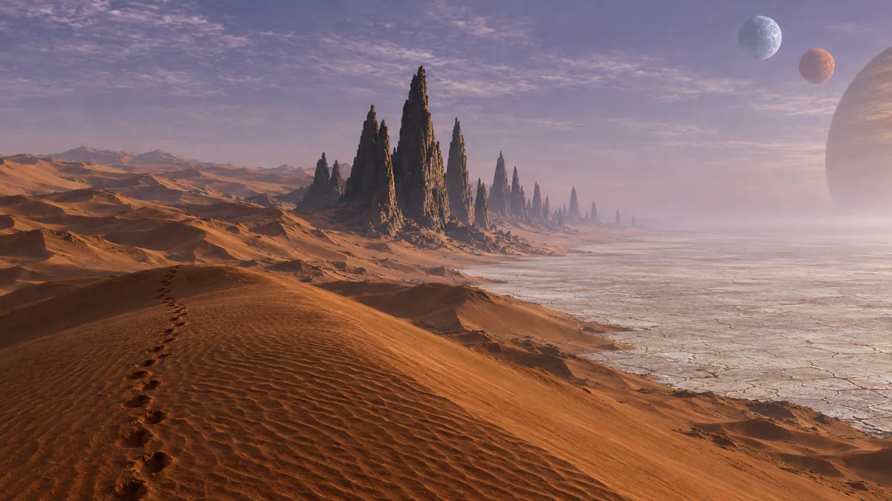

Story mode
Four steps. The real project, step by step.
This is how Impossible Worlds was made, exactly as the app shows it. Every text, still and clip below comes from the project file.
STEP 1 · STORY
Write it. The Director outlines it.
Paste a screenplay, or type an idea and let the AI write a short script from it. Add a visual style once and every still follows it.
- Write script from idea turns a line into a screenplay. Undo brings your idea back.
- Create scenes reads the script into heroes, places and scenes in chapters.
- Claude, GPT, Gemini or any OpenRouter text model can direct.
Script
IMPOSSIBLE WORLDS
A 25-second science-fiction vision, 16:9, built for scale. No dialogue: wind, breath and a vast low hum.
EXT. KETHRA SALT PLAIN — DAY
An endless desert of ochre dunes under a pale violet sky. Three giant planets hang over the horizon: a colossal banded amber gas giant, a pale-blue ice world above it, a rust-red moon beside it. [AMB: thin high wind, sand hiss]
Far below, a single tiny figure walks out onto the flat white salt plain: KAEL, his cloak trailing in the wind.
He stops at the centre of the plain, pulls his scarf down from his face and looks up at the planets. A breath. Stillness.
A grain of sand rises past his face. Then another. Then thousands. [SFX: a deep subsonic hum builds under the wind]
EXT. KETHRA SALT PLAIN — CONTINUOUS
The camera pulls back and up, faster and faster…
Visual styleEpic photorealistic science-fiction cinema, vast scale and atmospheric haze, ochre and rust desert under a pale violet sky, three giant planets on the horizon, 65mm large-format film texture, soft diffused light.
Outline
Impossible Worlds
On a vast alien salt plain beneath three giant planets, a lone traveller triggers the awakening of a colossal buried ring structure.
Chapter · The World Beneath
Found in the script
Scene 1Kethra salt plain — day
Kael walks from the ochre dunes onto the white salt plain, stops at its centre, lowers his scarf and looks up at the three immense planets. Sand and salt stream upward as glowing geometric lines appear beneath his boots…
Hero · KaelPlace · Kethra salt plainTime · dayNo dialogue
STEP 2 · CAST & PLACES
Design the faces and the world once.
Every hero gets a look, a voice and a front view. Every place gets photos in four directions, so each shot gets the backdrop it actually looks at.
- Look takes: generate until the face is right, then pick the front view.
- Four views of a place: main, reverse, left and right.
- Light and blocking stored on the place, reused by every scene there.
Cast · 1 hero

Front viewKael
38, lean, sun-darkened weathered face, close-cropped black hair, a thin scar through one eyebrow; long hooded sand-coloured cloak over a dark grey utility suit, cloth scarf, worn leather boots.
- Voice
- quiet, hoarse male voice
- Look
- 10 takes · GPT Image 2.5





Places · 1 place
Kethra salt plain4 views · 5 takes

Main · looking east
Reverse
Left- Light
- Soft diffused daylight from the pale violet sky; planets lit from screen right by a small distant white sun.
- Blocking
- Kael alone at the centre of the salt plain.
STEP 3 · SCENES
The Director writes every shot.
For each scene the AI Director writes the shots: type and lens, where the camera stands, what is in frame, the camera move, the sound. Then it draws a keyframe for each one, and an end frame where the world changes.
- Stills: keyframes from the cast and the place view the camera faces.
- End frames only where something transforms, so the clip lands on it.
- Multi-shot: group shots into one generation with real cuts.
Scene 1
Kethra salt plain — day
◎ Kethra salt plain · dayKael walks from the ochre dunes onto the white salt plain, stops at its centre, lowers his scarf and looks up at the three immense planets. Sand and salt stream upward as glowing geometric lines appear beneath his boots, and a rapidly rising camera reveals a buried ring structure kilometres wide.
Multi-shot · shots 1–2one 6 s clip, cuts about 3 sAnother takeBreak up
LTX-2.5 (RunPod GPU) · Auto · first keyframe. Chosen take: cut detected at 0.5 s.
STEP 4 · RENDER
Animate everything. Assemble the film.
Every still becomes video in one batch, after a cost check. Draft on a cheap model, then render the chosen takes again with a final model. Assemble puts every shot on the timeline with chapter markers.
- Budget: set a limit, see the spend live.
- Temp voices: assemble with free macOS voices to check the pacing first.
- Render queue: reorder, pause, see time left.
| Scene | Shots | Stills | Animated | Model | Spent |
|---|---|---|---|---|---|
| 1 · Kethra salt plain — day | 7 | 11/11 | 6/6 | LTX-2.5 · RunPod GPU | $7.23 |
Takes, sound and chapter markers go onto the timeline in script order.
Assemble to timeline →